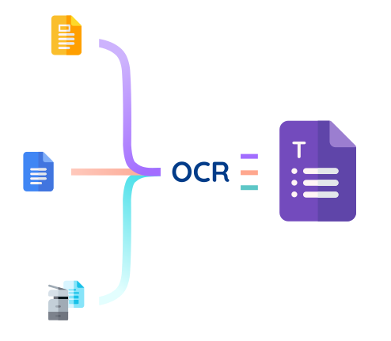

How to use Free online OCR converter?
We are going to discuss that how you can use this best OCR online free
tool to extract text from images:
- Drag and drop Image to the input field
- Or you can also upload a file from your device
- Verify the reCAPTCHA.
- Click on the Convert button
- You’ll get the editable text
- You can copy the text or download it as a docx or .txt file.
What is OCR.best?
OCR.best is an AI-based tool that converts image into text with great
accuracy. Using this tool is as simple as uploading the image and
copying the text. With this ocr converter online, you can convert
image to text at one click and its totally free.
What is an online OCR translator?
OCR translator is an online tool used to translate image into text. It
compares the objects presented in the image with the objects in the
tool's database at microscopic level. OCR.best uses OCR
(Optical Character Recognition)
technology for comparison. Its core recognition program is powered by
two of the best machine learning libraries TensorFlow and
Scikit-learn.
OCR
Extracts data from
structured docs
A template is used to target
extraction points
OCR + ML
Extracts data structured
docs with some variations
ML is used to help fit
documents into a template
soan OCR can process it
Intelligent Data Processing
Extracts information from
unstructured docs and images
ML finds, extracts, and
cleans extraction points
(template -free)
There were the times when we needed to retrieve data from the images
and the process of writing every word from an image was a hectic task.
AI OCR online tool is developed as a solution to this problem. All you
need to do is upload the specified image, and this OCR photo to text
converter will convert it to text in a matter of seconds.
Why do we need online OCR converter?
Using an AI online OCR free tool for OCR picture to text conversion
improves the process of automation. It makes our tasks more
hassle-free as well as error-free. The tool will help decrease your
efforts and increase your productivity especially when you have to
convert bulk images to text. The good thing about Image to free ocr
online converter is that you can convert photos to text by just
uploading the OCR image online with a single click. This OCR free
online converter provides a simple interface for converting image to
text. Credit should be given where it’s due, our dedicated team of
developers did an outstanding job by developing the recognition
algorithms to achieve 100% accuracy.
How does free online OCR work?
In terms of the technology used in this tool, OCR and machine
learning are employed to convert images to text. OCR stands for
optical character recognition and it works by identifying the
objects (characters) in an image using optical technology. Whether
it's a computer-printed document or handwritten paper, OCR can read
it especially when it's working together with the AI. You can upload
your image or drag and drop the image. It automatically converts the
image into text when you upload it.

Why this online OCR tool?
Hundreds of Image to OCR tools are available on the internet, but some
noticeable features set this tool apart from others.
Below are the prominent features of this tool:
-
Free of cost
-
Powered by Artificial Intelligence
-
Supports multiple languages
-
Text can be downloaded
-
Multiple picture format
-
Security assurance
-
Maximum Accuracy
Free of cost
Because of the AI integration in the free online OCR converter, the
tool is extremely accurate. The machine learning algorithm helps
this best online free OCR image to text tool to correctly recognize
poorly written text because it facilitates a better understanding of
the object. The AI-based online OCR to Word converter is always a
better option for converting handwritten assignments into a digital
format as well as converting old printed documents into editable
Word Doc, Docx formats.
Frequently Asked Questions
How can I convert images to text free?
OCR.best's online image to text OCR online converter lets you easily
transform any image into text without paying for it. All you have to
do is upload the image and copy the text.
How do I convert a picture to normal text?
If your picture has some text and you want to copy this text, an
online ocr translator is helpful in this scenario. It will instantly
convert the image into text with better accuracy.
How do I extract text from a screenshot?
Go to OCR.best. Upload the screenshot once you have taken it. It
will convert it to text automatically. Then you can copy or download
on your device.
What is a good tool to extract text from image online?
OCR.best is a free tool that you can use to extract text from images
online. There are a lot of different alternatives as well, such as
Imagetotext.info that
you can also try for free.